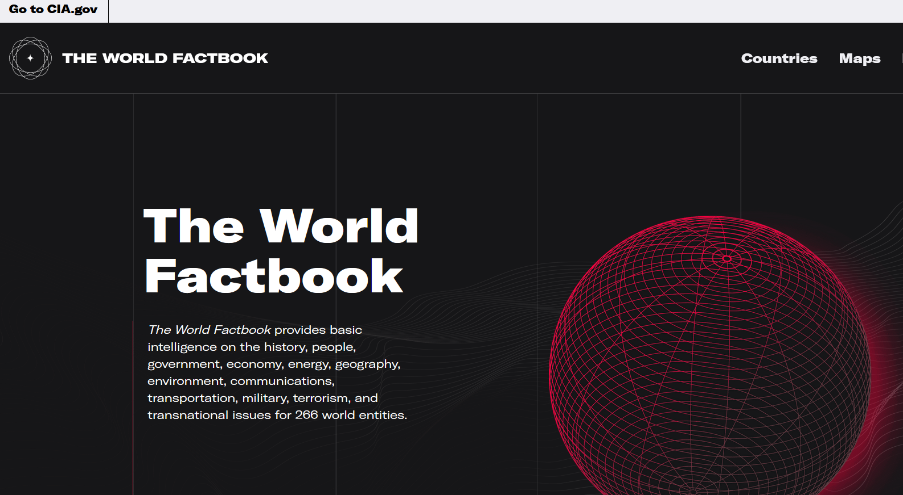
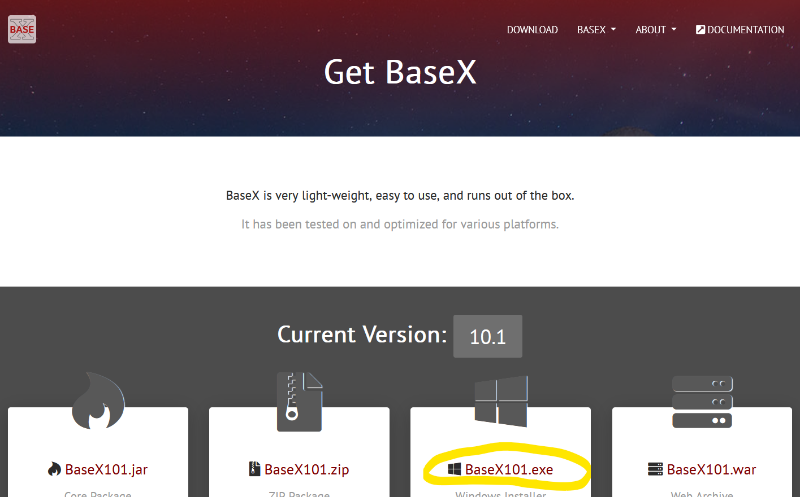
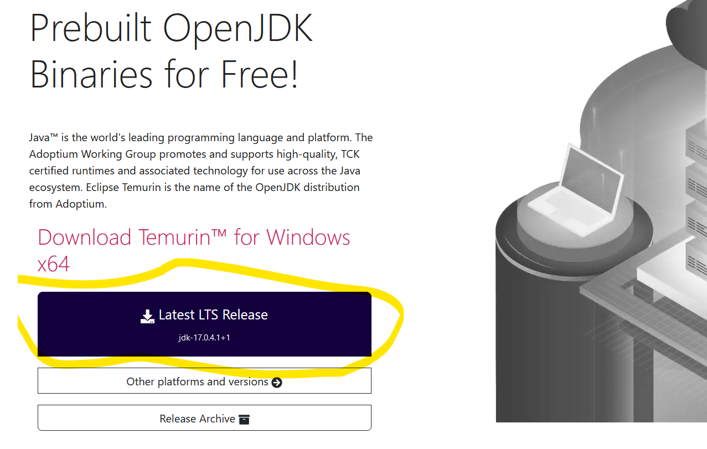
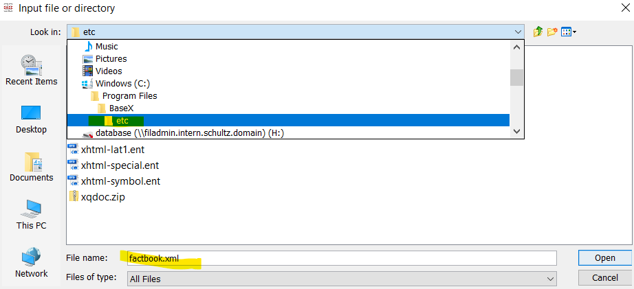
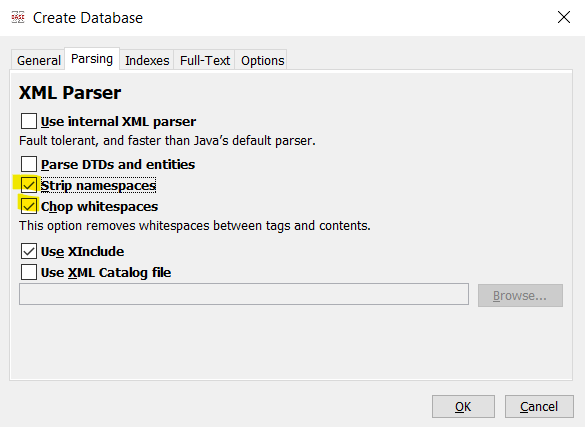
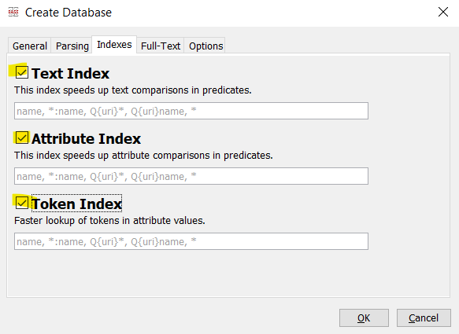
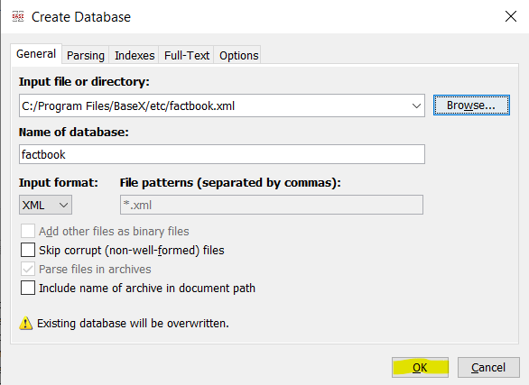

XPath
- på opdagelse i CIA's World Factbook
Hvad er XPath?
- Standard måde at søge struktureret i XML
- Et query sprog til XML - "SQL for XML"
- Tilgængelig i bl.a. C#, Javascript, XSLT etc.
På opdagelse i et stort XML datasæt 
Download BaseX til Windows fra https://basex.org/download/
Download Java fra https://adoptium.net/
Opret en database 
Strip namespaces 
Index all the things! 
Done 

Path expressions
Udvælgelse af noder på baggrund af deres position i træet
Eksempel: Alle lande
/mondial/country/name/text()/ er roden af dokumentet
mondial er elementet der sidder i roden
mondial har (bl.a.) mange country elementer,
hver country har et name element
text() er tekst-noden i name
Eksempel: Alle lande
Vi behøver ikke den fulde path
//country/name
Albania
Andorra
Austria
Belarus
Belgium
...
Det første land i listen
//country[1]/name
Albania
Bil landekoder (en attribut @car_code)
//country/@car_code
car_code="AL"
car_code="AND"
car_code="A"
car_code="BY"
car_code="B"
...
Attributter på et country (Belgien)
//country[5]/@*
id="f0_162"
name="Belgium"
capital="f0_1477"
population="10170241"
datacode="BE"
total_area="30510"
population_growth="0.33"
infant_mortality="6.4"
gdp_agri="2"
gdp_total="197000"
inflation="1.6"
indep_date="04 10 1830"
government="constitutional monarchy"
gdp_ind="28"
gdp_serv="70"
car_code="B"
Path expressions - Opsummering
//name - name elementer
//* - alle elementer
//@id - id attributer
//@* - alle attributter
//text() - tekst-noder
//node() - noder (text() | *)
Predikater
Det der står mellem []
Filtrering af noder
Lande der har tyrkere som etnisk gruppe
//country[ethnicgroups = 'Turkish']/name
Germany
Macedonia
Turkey
Lande udenfor Tyrkiet der har tyrkere som etnisk gruppe
//country[ethnicgroups = 'Turkish' and name != 'Turkey']/name
Germany
Macedonia
Lande, hvis navn ender på 'Island'
//country/name[ends-with(., 'Island')]
Christmas Island
Norfolk Island
Lande i Europa (@continent = 'f0_119')
//country[encompassed/@continent = 'f0_119']/name
Albania
Andorra
Austria
...
Turkey
Så er det din tur!
Lande, hvis navn starter med 'Western'?
//country/name[starts-with(., 'Western')]Hvilket land har bil landekoden (@car_code) 'MA'?
//country[@car_code = 'MA']/nameHvor mange bor der i Gibraltar? (country/@population)
//country[name = 'Gibraltar']/@populationEr der lande med en population under 500?
//country[@population lt 500]/nameHvilke lande i Europra (encompassed/@continent = 'f0_119') har et jødisk mindretal ('Jewish')?
//country[encompassed/@continent = 'f0_119' and ethnicgroups = 'Jewish']/nameHvilket id har Danmark?
Hvor refereres det (med attributter)?
//*[@*='f0_193']Hvor mange lande er medlem af organization'en
'North Atlantic Treaty Organization', dvs. NATO
count(//organization[@name = 'North Atlantic Treaty Organization']/members)Er Danmark i blandt landene i NATO?
//organization[@name = 'North Atlantic Treaty Organization']/members[@country = 'f0_193']Expert-level: I hvilke lande har man mere end 1 km2 areal (country/@total_area) per indbygger (country/@population)
//country[(@total_area div @population) gt 1]/name